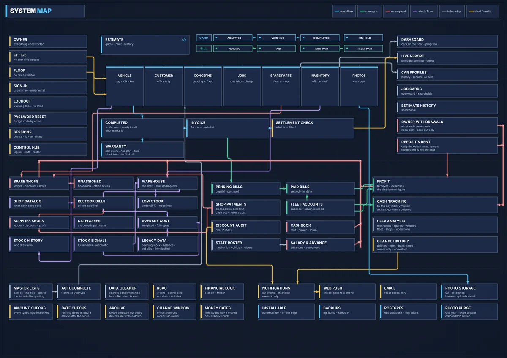

WorkshopOS
One system for a premium car workshop that ran on paper job cards, WhatsApp and spreadsheets.
Built for Formula D in Pullara, Kerala, whose owners had tried off-the-shelf workshop software without finding a fit. I mapped how the floor really works, then built one Django and PostgreSQL system for job cards, stock, supplier ledgers, payroll, estimates and warranty claims, with three roles: owner, office and floor.
- 21 rule modules each own one question, such as
How much do we hand the rent collector today?
No figure can be worked out two ways. - Stock is costed by weighted average, replayed in date order, so a supplier bill keyed weeks late re-prices only what came after it.
- Every money movement runs in one of 72 all-or-nothing transactions, and every delete, edit and back-dated entry lands in a Change History.
- Per-account and per-IP lockout, remote session revoke, and photo uploads signed with AWS SigV4 from the standard library, checked against Amazon's test vector.


- Models
- 49
- Routes
- 324
- Screens
- 140
- Django tests
- 3,185
- Test to code
- 1.34 : 1
- Commits
- 294